관악산도 산불의 안전지대가 아니다.
2025년, 대한민국은 유례없는 산불의 해였다.
전국 곳곳에서 번진 불길은 마을을 집어삼키고, 숲을 잿더미로 만들었다.
서울대학교 구성원들이 살아가는 관악산은 어떨까?
최근 관악산에서 대형 산불이 일어난 적은 없었지만,
관악산에도 꾸준히 산불이 발생해 왔다.
근래 산불의 가장 중요한 원인으로 입산자의 실화가 꼽히고 있다.
등산객이 몰릴수록 실화가 발생할 가능성도 높아진다.
관악산이 결코 산불로부터 안전할 수 없는 이유다.
우리가 관악산에 기대어 살아가는 한,
서울대학교 관악캠퍼스는 캠퍼스 전체가 관악산 위에 있는 만큼,
구성원들은 관악산 산불에 관심을 갖고 대비해야 한다.
관악산도 결코 산불의 안전지대가 아니다.
화마(火魔)로부터 관악산은 안전할까?
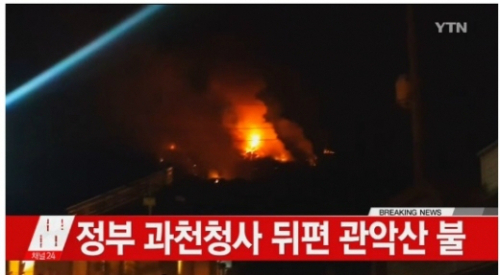
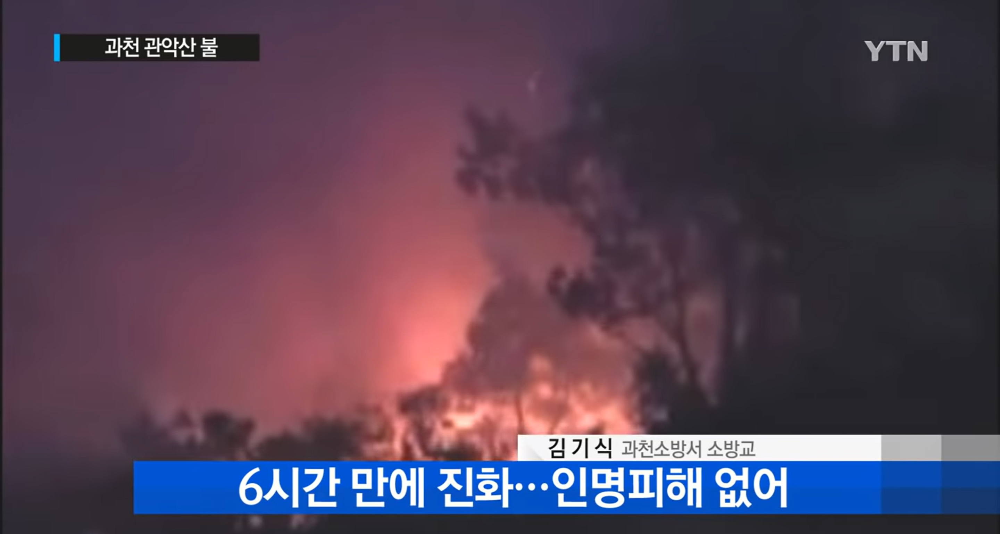
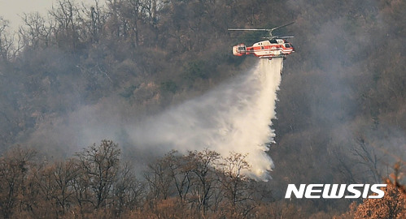
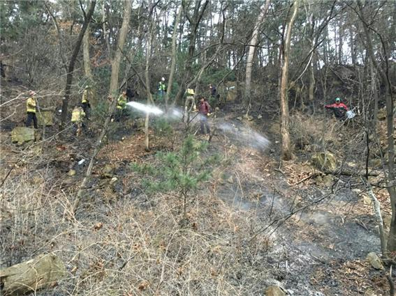
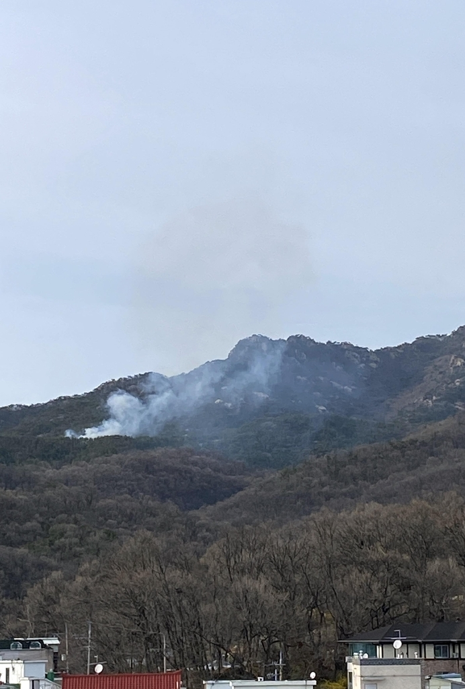
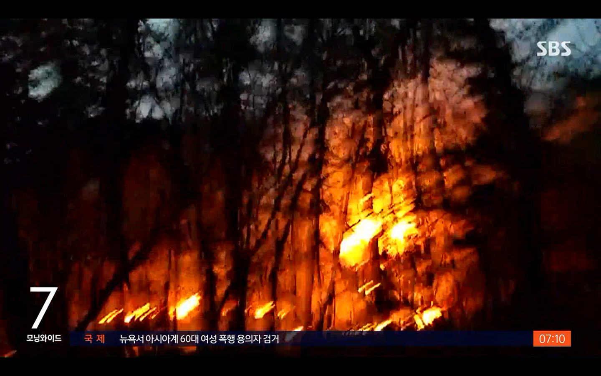
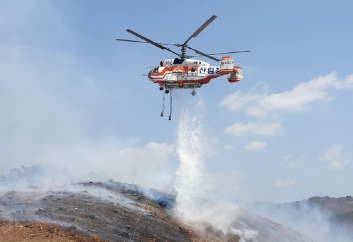
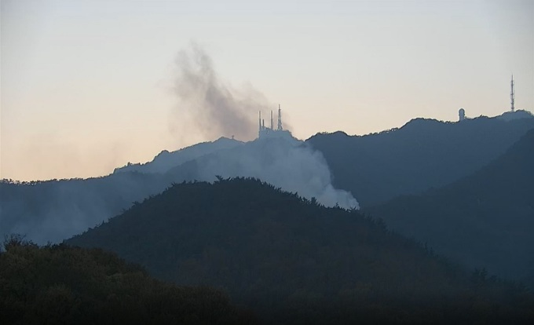
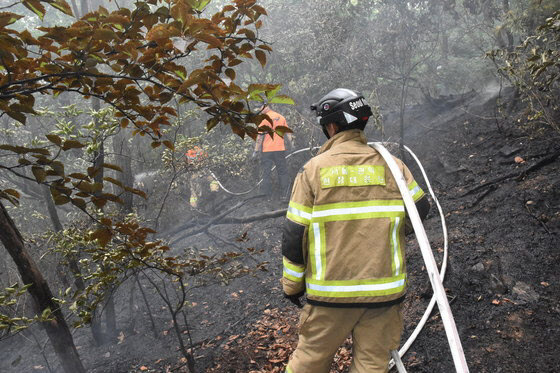
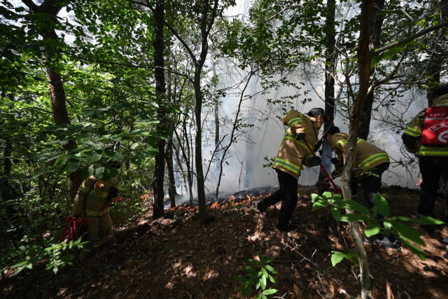
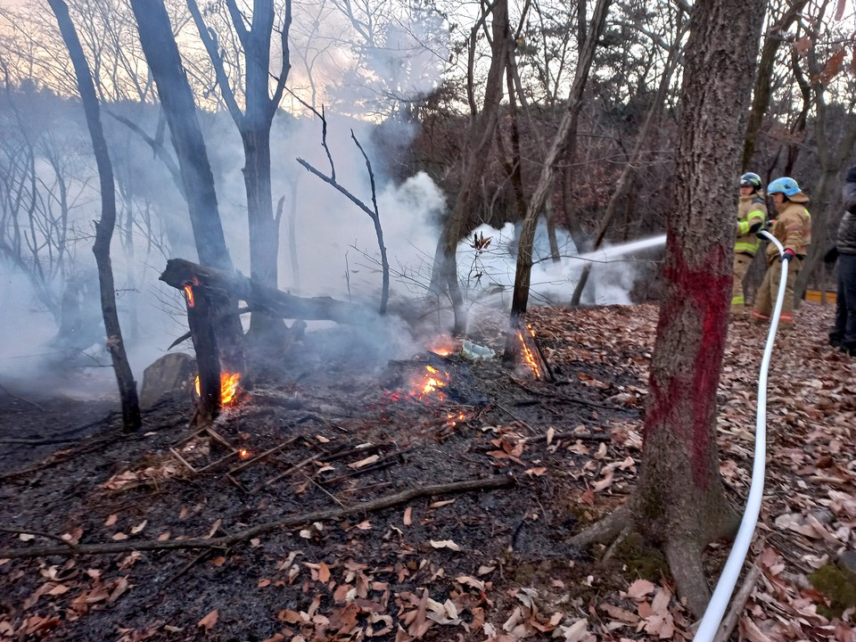
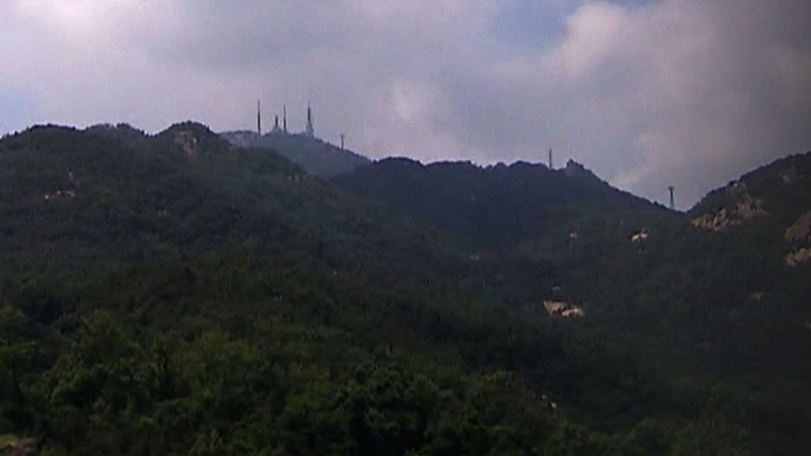
관악산도 결코 안전하지 않다.
| 150518 파이낸셜뉴스
관악산에 큰불, 야간이라 헬기 못 떠… 임야 5000㎡가량 소실
| 160606 YTN
과천 관악산 산불...밤샘 진화
| 161129 뉴시스
과천 관악산 산불 발생, 화재 진압하는 헬기
| 170405 헤럴드경제
관악산, 심야에 산불…1.0ha 태워
| 200328 한국경제TV
안양 관악산 산불, 소방헬기 투입 진화 중
| 210402 SBS
밤새 곳곳 화재…서울 관악산서 불, 40분 만에 진화
| 220517 시사매거진
과천 관악산 산불, 3시간여만에 진화
| 221108 뉴스핌
과천 관악산서 산불 발생...산림당국 진화 중
| 230621 뉴스1
관악산서 방화 추정 산불 발생…경찰 "수사 진행 중"
| 240603 경기일보
과천 관악산 일원서 산불 발생…1시간 20분 만에 진화
| 250111 중앙신문
과천 관악산 등산로에 산불, 20여분 만에 진화
| 250412 SBS
서울 관악산에 낙뢰 추정 산불…45분 만에 진화
관악산에도 산불이 날 수 있다.
산불은 불씨가 튈 때 시작된다.
산에는 마른 낙엽, 나뭇가지 등 타기 좋은 연료가 많아
적당한 열만 가해지면 열과 공기, 연료가 만나 산불이 시작된다.
불씨가 땅에 떨어지면 지표 위부터 태우기 시작한다.
땅 위를 태우던 불은 나무줄기와 이파리로 번지고,
화재로 발생한 상승기류에 가벼운 나뭇가지나 이파리 등이 휩쓸리면
불타는 채로 멀리 날아가 먼 곳에도 화재가 전파된다.
일련의 과정은 기상과 연료의 상태에 따라 가속화된다.
건조한 날씨는 연료의 수분기을 증발시켜 타기 좋은 상태로 만든다.
또 강풍은 불에 산소를 빠르게 공급하고 불티가 멀리 날아가 다른 곳에 번지도록 돕는다.
관악산은 등산객이 많아 실화의 우려가 크고,
봄철 건조한 날씨는 산불 확산에 유리한 조건을 제공한다.
아래 박스를 클릭하여 세부 내용을 볼 수 있다.